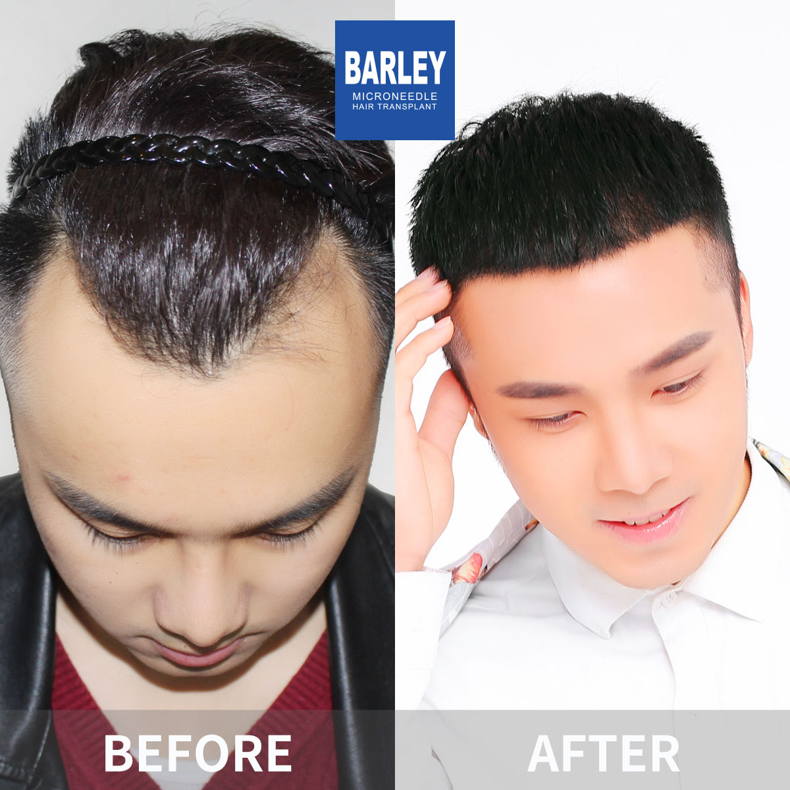
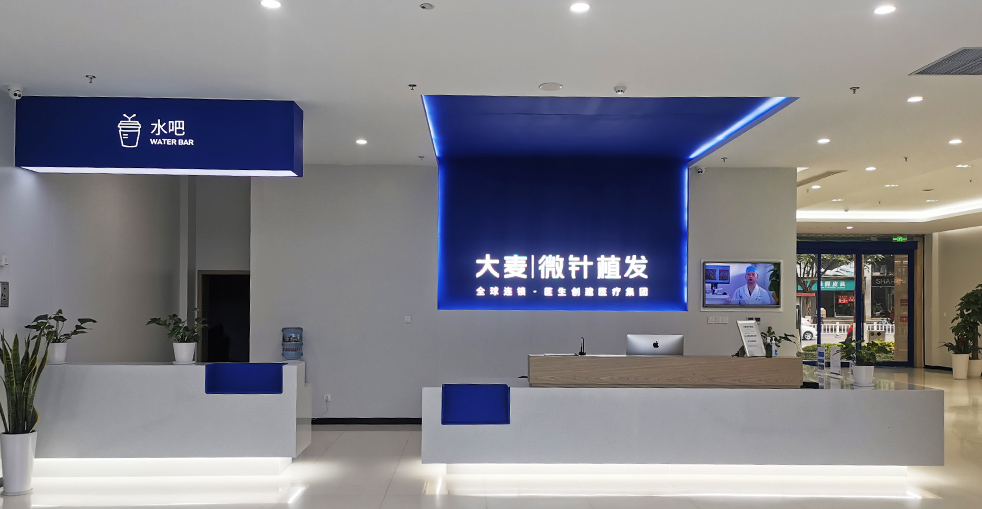

Traditional hair transplant procedures require shaving the donor area at the back of your head and often the recipient area as well. This creates an unmistakable visual sign that you have undergone surgery. For many people, especially those in professional or public-facing roles, this is simply not an acceptable compromise.
No-shave hair transplant solves this problem completely. Using advanced surgical techniques, our surgeons carefully section and part your existing hair to access both the donor and recipient areas without removing a single visible hair from your current style. The procedure works around your natural hair rather than removing it. The result is a complete transformation that nobody can detect — not your colleagues, not your friends, not even your closest family members unless you choose to tell them.
Advanced FUE technology with specialised modifications for maximum discretion
Surgeon uses precision instruments to extract individual follicular units through existing hair by creating small, temporary partings
Each extraction point is carefully placed so surrounding hairs naturally cover it
DHI technique using Choi implant pens allows precise graft placement without requiring a shaved recipient area
Surgeon creates tiny channels through existing hair using carefully controlled partings
Each graft is implanted at the exact angle and direction needed for natural-looking results
Surrounding hair immediately covers and protects newly placed grafts. Procedure takes 6-8 hours
Why professionals and public figures choose this discreet technique
Absolutely no visible signs of surgery. Your existing hair immediately conceals the entire procedure. Colleagues, friends, and family will have no idea you had a transplant unless you tell them.
Walk back into the office the very next day. No awkward recovery period to explain, no time away from work. Your professional image remains completely intact throughout the entire process.
Ideal for public figures, media personalities, executives, and anyone who needs to look their best at all times. The procedure is completely undetectable in photographs and on video.
No-shave transplant is perfectly suited for specific patient profiles
No-shave hair transplant is most effective for patients requiring up to 2,500 grafts — making it the ideal solution for hairline restoration, crown density enhancement, and early-stage hair loss correction. It is the preferred technique for female patients, who naturally tend to have longer hair that provides excellent coverage during the healing process.
Professionals in public-facing roles — including executives, television personalities, journalists, models, and public speakers — frequently choose this technique because it eliminates any disruption to their careers. If your job requires you to maintain a polished, confident appearance at all times, no-shave transplant ensures your restoration journey remains completely private from start to finish.
Your healing journey with no visible downtime
The most discreet hair restoration technique available today

No-shave transplant is the gold standard for patients who want outstanding results without anyone knowing they had a procedure. Using advanced FUE and DHI techniques, our surgeons work through your existing hair to extract and implant follicles with surgical precision. Your hairstyle remains completely unchanged from the outside.
How our surgeons achieve completely undetectable results
From private consultation to undetectable results
Complete privacy and professional care from start to finish
Confidential evaluation of your specific needs
Bespoke plan designed for your unique situation
Individual grafts carefully extracted through existing hair
DHI technique using Choi implant pens
Return to your normal life immediately
Full, undetectable results in 12-15 months
Industry leader with proven results across the globe
Pioneering hair transplant technology in China since 2006
Located in major cities across China, all maintained to the same exacting standards
Innovative microneedle and implant pen systems for superior clinical outcomes
Trusted by international patients from over 60 countries worldwide
Dedicated English-speaking coordinators from consultation through to aftercare
State-of-the-art facilities and rigorous safety protocols at every stage
See the discreet transformations our patients have achieved





Moments shared with patients from around the world

Happy patient showing off their natural-looking hair transplant

Grateful patient celebrating their amazing transformation

Proud patient with their new, natural hairline

Patient showing their incredible transformation journey

Overseas patient thrilled with their results at Barley

Patient smiling with their new, natural-looking hair

Satisfied patient with our dedicated medical team

Patient showing off their successful no-shave restoration
Real stories from real patients who chose no-shave at Barley
As a television presenter, I absolutely could not appear on camera with shaved patches on my head. The no-shave FUE technique was a game-changer — they extracted grafts from between my existing hairs at the back and nobody noticed a thing. I had 1,200 grafts placed along my hairline and returned to the studio the following Monday. My producer simply said I looked well-rested! At 12 months, the hairline results are natural and my donor area remains completely undetectable.
I am a female patient and the idea of shaving my head was completely unthinkable. The no-shave option let them extract from tiny, hidden sections at the back that were concealed by my longer hair above. They placed 800 grafts to increase my temple density and reinforce my hairline. The procedure took longer than a standard FUE because of the precision required, but the ability to keep my hair down and cover everything made it entirely worth it. At 9 months, my hair is noticeably fuller and not a single person knew I had surgery.
I run a tech startup and meeting investors the week after my transplant was absolutely not negotiable. With the no-shave method, they harvested 1,500 grafts from tiny, dispersed extraction zones at the back of my head — each zone was about 1 cm and completely hidden by my surrounding hair. My scalp was a bit tender for 3 days but looked absolutely normal. I walked into three pitch meetings and closed a funding round the same week — nobody had a clue. Results at 10 months are brilliant.
My concern was that colleagues would see me during the healing phase and ask questions I simply did not want to answer. The no-shave technique solved this completely. Only the very short hairs in the extraction zone were trimmed — the rest of my hair covered everything. For the recipient area, they made incisions between my existing thinning hairs without removing anything. 1,000 grafts for my crown area. By day 4, even the tiny trimmed spots were barely visible under my longer top hair. Seven months in, the crown density has improved significantly.
I was on a modelling contract and shaving was not an option under my terms. The no-shave FUE allowed me to keep my appearance completely unchanged throughout the entire process. They extracted 900 grafts in a carefully planned pattern that left no visible gaps. The only hint anything had happened was slight redness for a few days, which I explained away as mild sun sensitivity. At 11 months my hairline looks incredible and I renewed my contract. The premium for no-shave was absolutely worth every penny.
I needed 1,800 grafts for my hairline and mid-scalp but work in a client-facing role where appearance matters enormously. The no-shave technique took about 9 hours — longer than a standard FUE — because the surgeons had to work around my existing hair. But the trade-off was zero visible evidence of surgery. I flew back to London on Sunday, attended a client presentation on Monday, and returned for a follow-up consultation 3 months later. The grafts grew in perfectly and not a single person at work suspected anything. Eight months post-op and the results are excellent.
Modern facilities designed for your comfort and peace of mind

Our state-of-the-art clinical environment

Relax in our premium patient lounge

Sterile, fully equipped surgical environment

Confidential one-on-one assessments

Comfortable space for your initial recovery period

Professional and friendly first impression
Answers to the questions patients ask us most often
Click to copy contact information
15810155700
+86 13730143529
hairtransplant@qq.com

Everyone's hair loss journey and solution are unique due to a variety of factors. Our hair restoration experts will assist you in determining the root cause and the best solution for your hair restoration plan. If you have any questions, please ask; we are happy to assist.